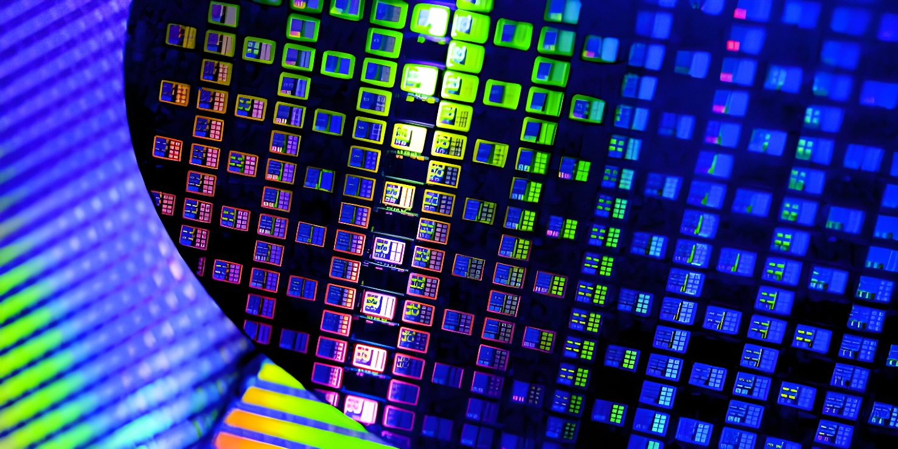

Le 3 juin 2026, la Commission européenne a présenté le Chips Act 2.0, une révision en profondeur de sa stratégie sur les semi-conducteurs. Trois ans après le texte fondateur de 2023, l'objectif affiché de doubler la part de marché européenne reste hors de portée selon ses propres auditeurs. Plutôt que de courir après les méga-usines, Bruxelles change de méthode et mise sur la demande, les niches technologiques et la rapidité d'exécution.
Le 3 juin 2026, la Commission européenne a présenté sa proposition de « Chips Act 2.0 », pièce maîtresse d'un Tech Sovereignty Package plus large couvrant aussi le cloud, l'intelligence artificielle et les logiciels libres. Le texte vise à renforcer l'écosystème européen des semi-conducteurs, réduire les dépendances stratégiques et soutenir à la fois la conception et la fabrication de puces avancées comme de puces grand public sur le sol européen.
Cette nouvelle mouture intervient après un bilan sévère du premier Chips Act, entré en vigueur en septembre 2023. Ce texte avait mobilisé 43 milliards d'euros d'investissements publics et privés avec un objectif simple : faire passer la part de l'Union européenne dans la production mondiale de semi-conducteurs d'environ 10 % à 20 % d'ici 2030. En avril 2025, la Cour des comptes européenne a jugé cet objectif « très improbable », pointant des financements fragmentés entre vingt-sept États membres, des procédures d'approbation trop lentes et un effet de levier limité de la Commission, qui ne pilote directement qu'une fraction des fonds engagés.
Le Chips Act 2.0 ne renonce pas à l'objectif de souveraineté, mais change d'approche. Le texte s'articule autour de quatre axes. D'abord, améliorer les conditions d'investissement : accélération des procédures d'autorisation avec un délai maximal de douze mois, lancement de « Grands Défis » ciblés sur les puces jugées stratégiques comme celles dédiées à l'intelligence artificielle, et renforcement des partenariats internationaux. Ensuite, et c'est la vraie nouveauté, stimuler la demande plutôt que la seule offre, via des « accélérateurs de demande » qui synchronisent la production avec les besoins réels de l'industrie, et des synergies explicites avec le futur Cloud and AI Development Act et les data centers européens.
Sur le volet offre, le texte ouvre la possibilité d'aides d'État pour des projets dits « premiers du genre » — des installations qui n'existent pas encore sur le territoire de l'Union, à tous les stades de la chaîne de valeur, des matières premières à l'encapsulation des puces. Des « projets stratégiques » pourront aussi débloquer des financements européens co-investis avec les États membres et l'industrie. Pour attirer ces investissements, la Commission crée un nouveau label, les « Semiconductor Regions of Excellence », destiné à valoriser les territoires qui se dotent des conditions d'accueil adéquates.
Le texte introduit également une plateforme interentreprises de suivi de la chaîne d'approvisionnement, pour aider les industriels à anticiper les ruptures, et prévoit des outils de cartographie et de gestion de crise en cas de pénurie future, sur le modèle de ce qu'avait connu le secteur pendant la pandémie de Covid-19.
« Certains éléments davantage axés sur l'offre, ainsi que les propositions visant à impliquer fortement la Commission dans l'orientation et le suivi, suscitent des inquiétudes. Nous devons éviter le risque de complexification excessive et de bureaucratie. »
— Christophe Fouquet, PDG d'ASML, réaction au Chips Act 2.0, juin 2026L'accueil de l'industrie reste contrasté. Le secteur, représenté notamment par l'association professionnelle SEMI Europe, salue dans l'ensemble une évolution jugée plus réaliste que le texte de 2023, en particulier l'idée de stimuler la demande et d'accélérer les permis. Mais des entreprises comme ASML, Infineon, NXP ou STMicroelectronics, qui dominent en Europe les segments automobile, industriel et de l'électronique grand public, restent vigilantes sur la capacité de Bruxelles à transformer ces annonces en investissements réels sans ajouter de lourdeur administrative supplémentaire.
La Commission européenne propose le premier European Chips Act, en réponse à la pénurie mondiale de semi-conducteurs révélée par la pandémie de Covid-19.
Entrée en vigueur du Chips Act : 43 milliards d'euros mobilisés, objectif de 20 % de part de marché mondiale d'ici 2030.
Intel gèle son projet d'usine de semi-conducteurs à Magdebourg, en Allemagne, faute de demande suffisante.
La Cour des comptes européenne publie un rapport jugeant « très improbable » l'atteinte de l'objectif de 20 % du marché mondial d'ici 2030.
Intel annule définitivement son projet allemand, qui devait représenter 30 milliards d'euros d'investissement.
La Commission présente le Chips Act 2.0 au sein du Tech Sovereignty Package, lors du SEMI Europe Policy Forum à Bruxelles.
Le Chips Act 2.0 n'est encore qu'une proposition législative : elle doit désormais être négociée avec le Parlement européen et le Conseil, un processus qui peut prendre plusieurs mois, voire au-delà d'un an. Son principal mérite est de tirer les leçons du premier texte en abandonnant l'idée de rivaliser frontalement avec Taïwan ou la Corée du Sud sur les puces les plus avancées, pour concentrer les efforts là où l'Europe dispose déjà d'atouts réels — la photolithographie avec ASML, l'automobile et l'industriel avec Infineon, NXP ou STMicroelectronics.
Reste une question de fond : l'Union peut-elle peser sur un marché mondial appelé à dépasser 1 370 milliards d'euros d'ici 2030, porté à 70 % par la demande en puces d'intelligence artificielle, alors qu'elle reste largement absente de la fabrication des accélérateurs et processeurs les plus recherchés ? La réponse se jouera moins dans le texte lui-même que dans la rapidité avec laquelle Bruxelles et les États membres sauront, cette fois, transformer les annonces en usines.